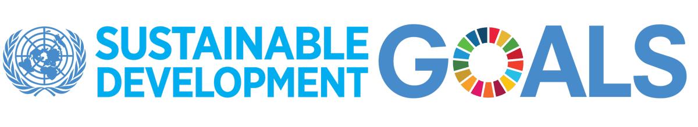
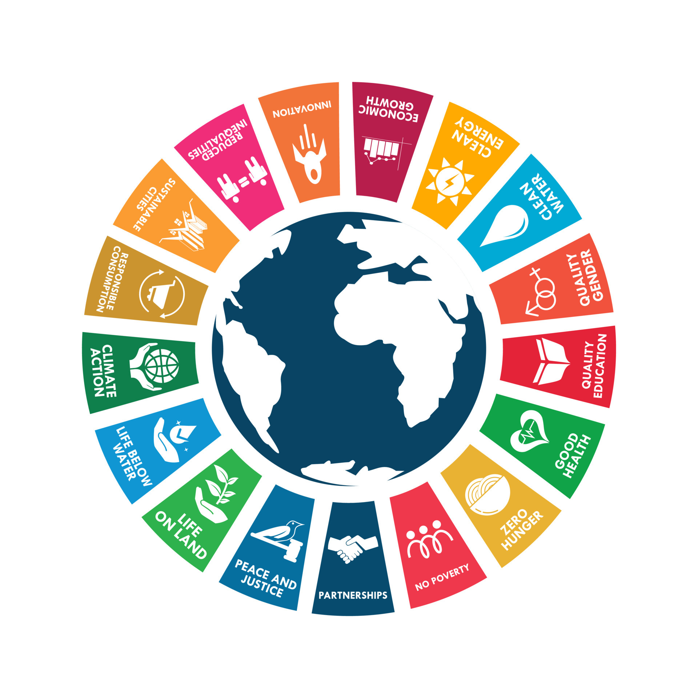

NO POVERTY TARGETS
TARGET 1.1 : ERADICATE EXTREME POVERTY
(By 2030, eradicate extreme poverty for all people everywhere, currently measured as people living on less than $1.25 a day)TARGET 1.2 : REDUCE POVERTY BY AT LEAST 50%
((By 2030, reduce at least by half the proportion of men, women and children of all ages living in poverty in all its dimensions according to national definitions)TARGET 1.3 : IMPLEMENT SOCIAL PROTECTION SYSTEMS
(Implement nationally appropriate social protection systems and measures for all, including floors, and by 2030 achieve substantial coverage of the poor and the vulnerable)TARGET 1.4 : EQUAL RIGHTS TO OWNERSHIP, BASIC SERVICES, TECHNOLOGY AND ECONOMIC RESOURCES
(By 2030, ensure that all men and women, in particular the poor and the vulnerable, have equal rights to economic resources, as well as access to basic services, ownership and control over land and other forms of property, inheritance, natural resources, appropriate new technology and financial services, including microfinance)TARGET 1.5 : BUILD RESILIENCE TO ENVIRONMENTAL, ECONOMIC AND SOCIAL DISASTERS
(By 2030, build the resilience of the poor and those in vulnerable situations and reduce their exposure and vulnerability to climate-related extreme events and other economic, social and environmental shocks and disasters)TARGET 1.A : MOBILIZE RESOURCES TO IMPLEMENT POLICIES TO END POVERTY
(Ensure significant mobilization of resources from a variety of sources, including through enhanced development cooperation, in order to provide adequate and predictable means for developing countries, in particular least developed countries, to implement programmes and policies to end poverty in all its dimensions)TARGET 1.B : CREATE PRO-POOR AND GENDER-SENSITIVE POLICY FRAMEWORKS
(Create sound policy frameworks at the national, regional and international levels, based on pro-poor and gender-sensitive development strategies, to support accelerated investment in poverty eradication actions)